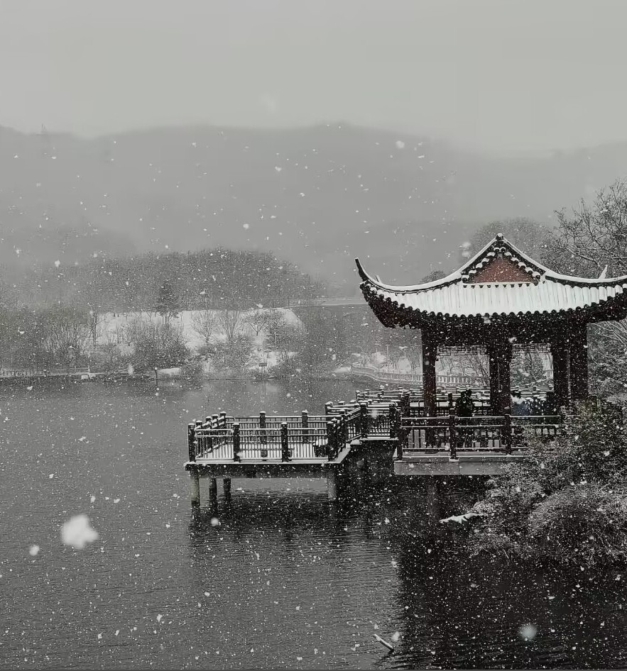
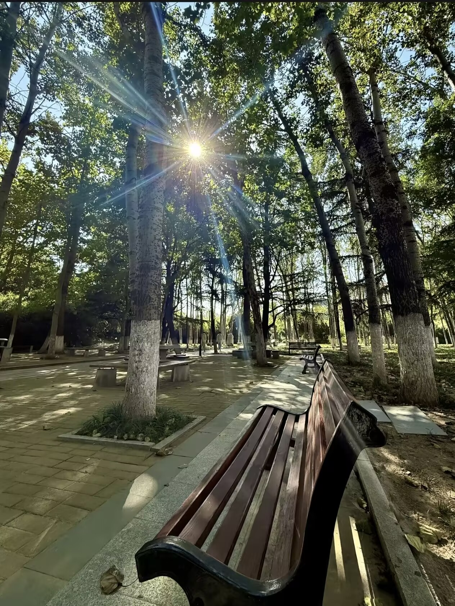
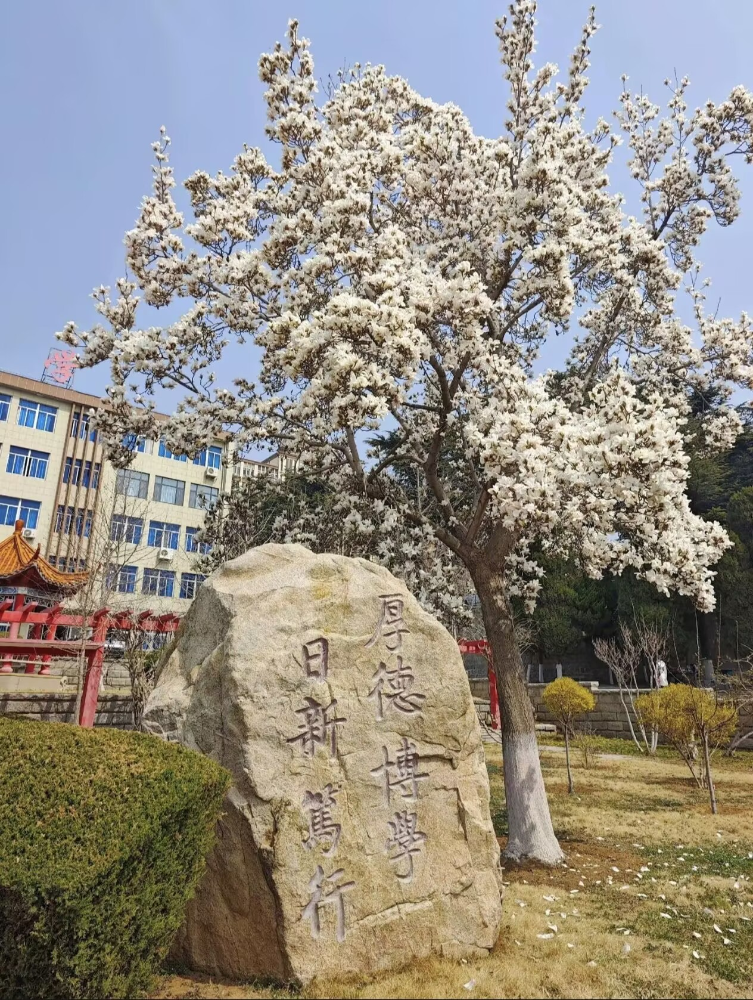
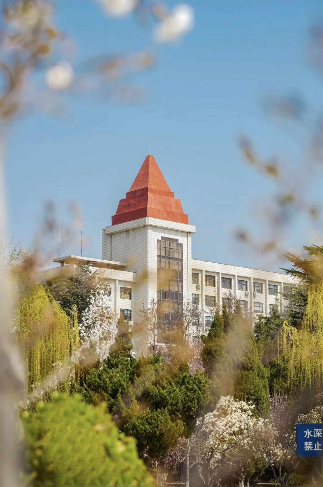
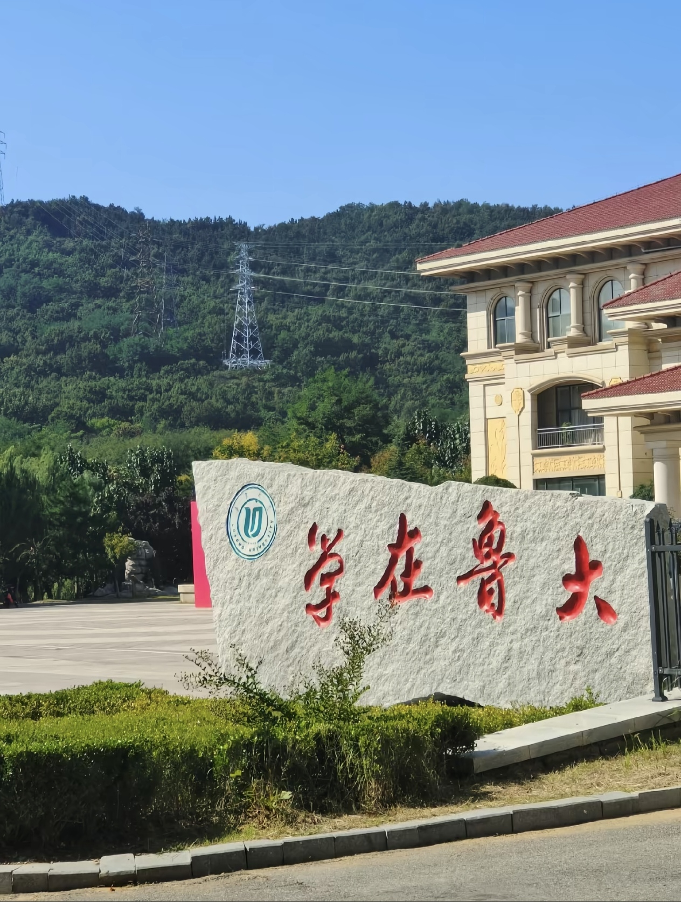
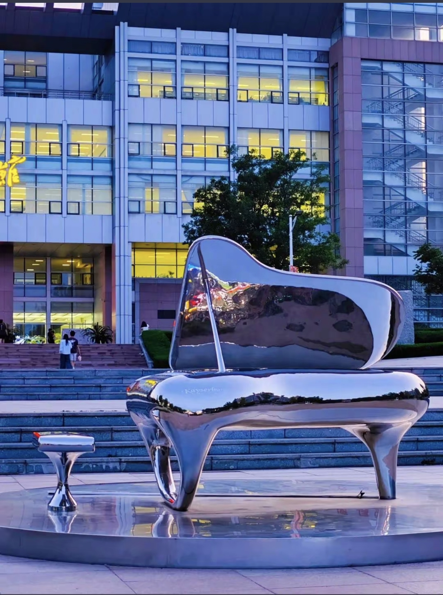

春入鲁大，风是软的，光是暖的，连时光都在湖光树影里慢了下来。人工湖畔的六角亭覆着初融的残雪，檐角垂落的冰棱在晨光里闪着细碎的光，湖面漾着粼粼波纹，将远山的黛色、亭台的飞檐揉成一幅淡墨长卷。风过处，柳丝抽芽，拂过水面惊起涟漪，锦鲤在冰融的春水间自在游弋，为这静谧的景致添了几分灵动。沿着林间步道漫行，阳光穿透梧桐与松柏的枝叶，在青石板路上洒下斑驳的星子，长椅静卧在树影里，承接着春日的温柔与学子的闲情。白玉兰树在教学楼前肆意绽放，满树繁花如云似雪，风一吹，花瓣簌簌飘落，铺就一条香氛满溢的花径，每一步都踏在春日的诗意里，每一眼都藏着校园的温柔。
“厚德博学，日新笃行” 的校训石，静静伫立在玉兰树下，将校园的人文底蕴与春日盛景完美交融。春风漫过校园的每一个角落，唤醒了沉睡的草木，也唤醒了青春的朝气。实验楼旁的迎春花缀满金黄，像一串串春日的风铃，奏响了校园的生机；樱花大道旁的早樱次第绽放，粉白的花瓣与蓝天相映，成了学子们镜头里最美的风景。午后的阳光洒满操场，同学们在跑道上奔跑，在草坪上诵读，青春的身影与春日的草木相映成趣。傍晚时分，夕阳为教学楼镀上暖金，归鸟掠过天际，晚风携着花香，将校园的温柔与书香揉进时光里。鲁大的春，是自然之美与人文之韵的共生，是每一个学子心中，最温暖、最鲜活的青春底色。





